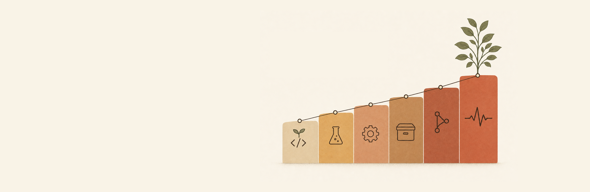
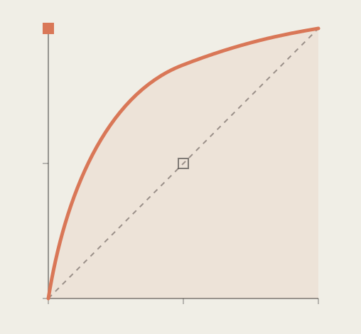
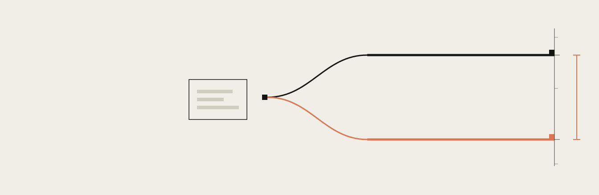
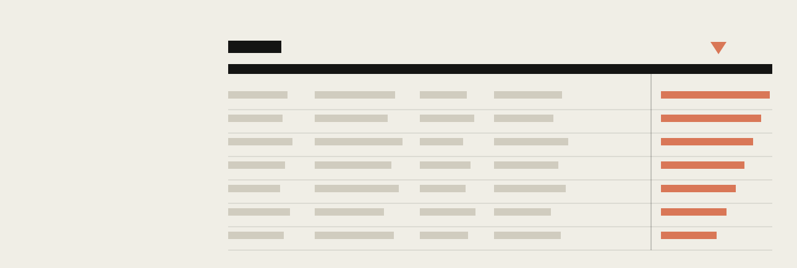
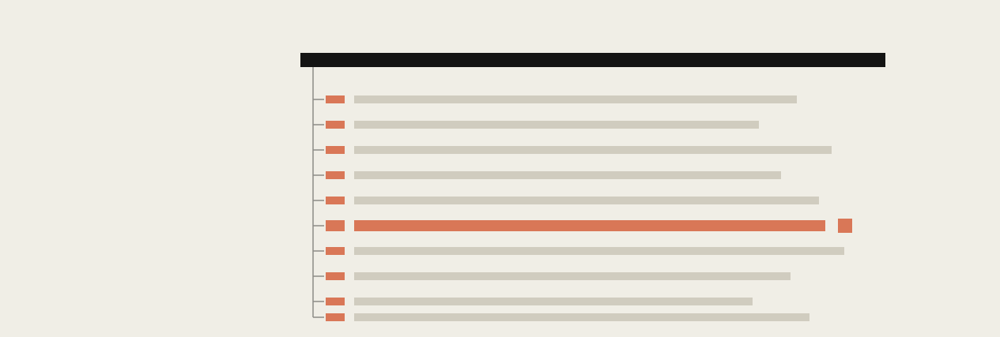
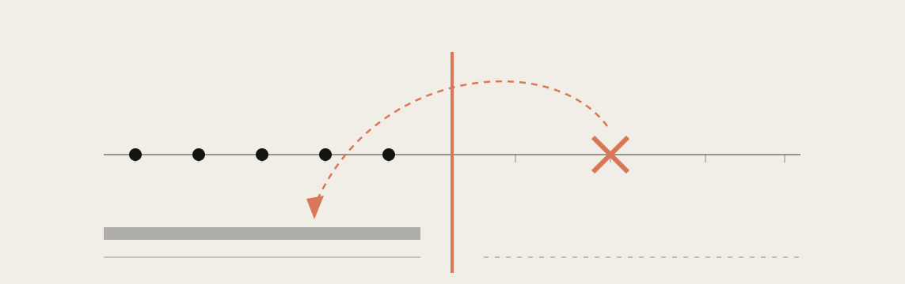
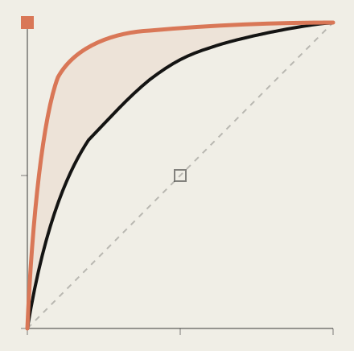
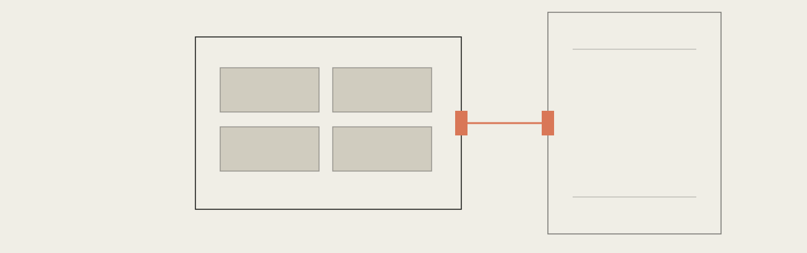
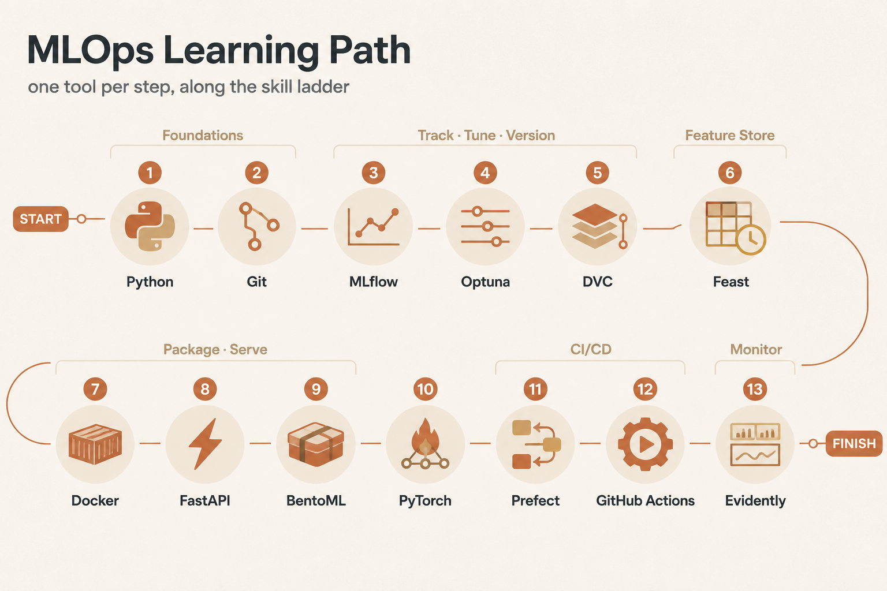

一支腳本被現實打臉七次
100 分鐘實講 + Q&A 與休息
不是一條直線 —— 這是它和軟體工程最大的差別
訓練 = 拿一堆「已知輸入 + 已知答案」的資料，去調模型裡面那組數字；調到猜得夠準為止。
模型只看得到這一份。它在這裡把自己那組數字調到猜得夠準。
accuracy 一定要算在這一份上。這才是「它到底會不會」。
「我的瑕疵檢測模型 accuracy 有 99%。」
一支永遠回答「良品」的程式也是 99%。

跟丟銅板一樣 —— 沒本事
曲線越往左上凸越好
99 比 1 也騙不了它 —— 所以拿它取代 accuracy

你截圖傳到群組的那個數字
同一份程式碼，同一份資料
驗收重點：跑兩次必須一模一樣
這一行，是整條 MLOps pipeline 的第一塊磚。
每次切的位置不一樣，考卷不同當然分數不同。
起始參數是隨機抽的，收斂到的地方也就不同。
連 CPU 怎麼排工作都會影響結果。
我現在改了什麼
開一條功能分支
選要納管的檔案
存成一個版本
目的是看懂資料長什麼樣 —— 理解來自看見。
目的是產出今天、明天、別人跑都一樣的數字。

同一件事跑的每一次，都收在同一張表
跑一次多一列，那一列就叫一個 run
點一下欄位，最好的那組自己浮上來
你先把每個設定要試的值列出來 —— C 列 5 個、max_iter 列 5 個、solver 列 2 個，它就把所有組合全部跑過一遍。
你只給每個設定一段範圍，它自己挑值去試。試一次叫一個 trial，你決定要試幾次就好。

一句 optimize，20 次訓練自己排隊跑完
母紀錄一筆，底下掛 20 筆子紀錄
自動調參又自動留紀錄，就是 AutoML
這次實驗記在哪？
最好的超參是哪組？
這版程式碼配哪版資料？

預測那一刻你真的拿得到的讀值
未來才量到 —— 你不該有它
特徵洩漏：模型在訓練時偷看到答案

貼著左上角的那條 —— 它偷看過答案
下面那條 —— 誠實，但明顯高過亂猜
那塊淡色區域全是假的 —— 同一份資料，只差 join 的方式
整張特徵表取最新的值，一次對上所有訓練樣本 —— 就是平常寫慣的那一行 merge。
問題在於：那個「最新的值」，是你今天才知道的。訓練樣本是三個月前的事，它憑什麼看得到今天？
每一列訓練樣本，各自回到它自己的那個時間點，只取那一刻之前最新的一筆特徵值。
再加一個 ttl（保鮮期）：太舊的值就當作沒有，因為上線時它也早就過期了。
登記特徵定義
把「這個特徵怎麼算」寫成唯一一份，之後訓練和線上都只讀它。
組訓練集
離線特徵：翻歷史資料慢慢撈，內建 point-in-time，不會偷看未來。
把最新特徵搬到線上
materialize＝實體化：把算好的最新值先推進線上資料庫等著被查。
線上秒查
線上特徵：給一個 id，毫秒內回最新那一筆 —— 定義跟訓練時同一份。
他要的是一個能直接呼叫的網址 —— 程式把資料送過去，就拿到答案。不是一份交接文件。
你手上只有一個
序列化就是把記憶體裡訓練好的模型，寫成一個能帶著走的檔案。三選一，差別不在好不好用，在你把自己綁死到多緊。
端點（endpoint）就是網址上的一個入口。別人把資料送到這個入口，你把答案回給他 —— 服務化就這麼一件事。
訓練一次、服務多次。不是每個請求都重來一遍。
Pydantic 是幫你檢查欄位的套件：少傳、型別錯，直接擋掉，不讓它進到模型。
收資料 → 呼叫模型 → 回一包 JSON。多做一件都是雜訊。

圖左的大方框就是容器：Python、套件、模型全封在裡面。右邊是你的電腦。中間那條線，是外面唯一進得去的通道。
你電腦上的門牌。想改成 9000 就寫 9000，是你說了算
容器裡的門牌。程式監聽哪個埠就得填哪個，改錯就連不到
容器自己定期回報還活著。少了它，掛掉也沒人知道
彈性最大，什麼都能塞。代價是很多事沒人幫你做。
為模型服務而生，那些瑣事它預設就幫你處理掉。
兩個名字很唬人，回答的是同一個問題：怎麼把使用者換到新模型上，而不讓所有人一次承受全部風險。
藍是現在線上這一套，綠是新訓練的那一套。兩套同時養著，確認綠沒問題，再把全部流量一次整批切過去。
金絲雀是礦工帶下坑、先替人示警的鳥。新模型先接 5% 的流量，指標沒問題再一路加到 100%。
服務照常回應每一次請求，健康檢查全綠。
只有安靜的錯答案 —— 沒有 log，也沒有告警。
軟體監控看服務活不活；ML 監控要看它還準不準。
服務還活著嗎、回得夠快嗎
只看機器有沒有喘，不管它給的答案對不對。
進來的資料有沒有壞掉
欄位空了、型別跑掉、數值超出合理範圍。
現在的資料還像當初訓練時嗎
資料沒壞、格式也對，但整體長相已經不一樣了。
模型的答案還幫得上忙嗎
前三層全綠，這一層還是可能已經在賠錢。
模型當初上線時，訓練資料長什麼樣。這是拿來比對的基準線。
線上這段時間實際進來的新資料，通常是最近一週或一個月。
拿現在跟過去比，對不上就叫漂移。概念就這麼簡單 —— 難的是下一頁那兩個坑。
感測器資料表是一台機器接一台機器排下來的，不是按時間排的。
你以為對半切是「前半段時間 vs 後半段時間」，實際切出來的是「A 機台 vs B 機台」。兩台機器本來就長得不一樣，工具當然說有漂移 —— 那不是漂移，是你切錯了。
預設要超過半數欄位一起漂移，總結論才會亮紅燈（drift_share = 0.5，就是 50% 這個門檻）。
三個欄位裡只有一個漂掉 = 三分之一，沒過 50%，總結論就寫「沒有漂移」。但那一欄如果正好是模型最看重的溫度，模型早就在亂猜了。
Model Card 就是模型的身分證 + 使用說明書：誰做的、吃什麼資料、能用在哪、不能用在哪。歐盟 AI 法規（EU AI Act）再加一條 —— 風險越高的模型，要交代的越多。
每支訓練程式固定亂數種子 random_state=42，改東西前先開一條分支 —— 不用裝任何工具，今天下午就能做完
裝 MLflow，只加三行：log_param · log_metric · log_model —— 從此每次實驗都排得出高低
上線前加一道門檻：accuracy >= 0.85 才准出去 —— 擋住爛模型悄悄取代好模型
Docker → Prefect → Evidently → Feast，一次一個，等團隊真的用順了再進下一個

6 模組 × 2 小時
先玩沙盒把工具摸熟 → 再接進主線專案 → 最後自己設計一條
從感測器資料到上線監控，自己搭一整條，收在期末專題